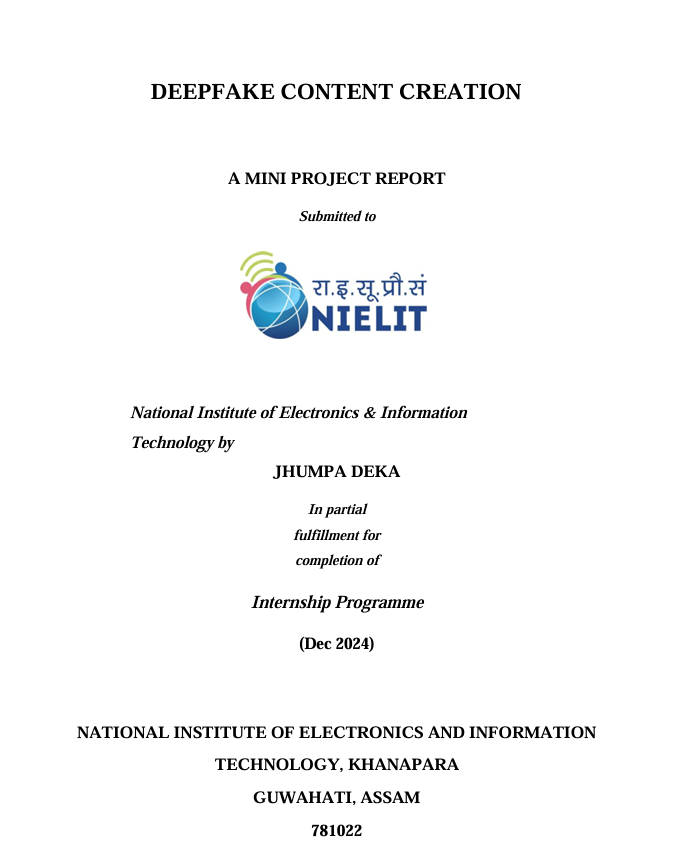
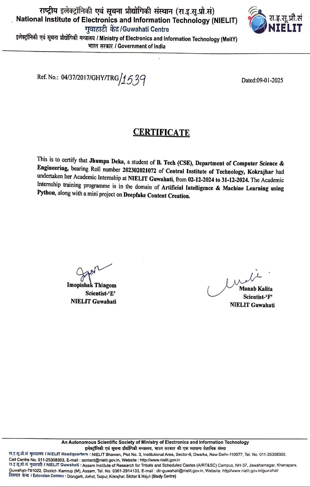
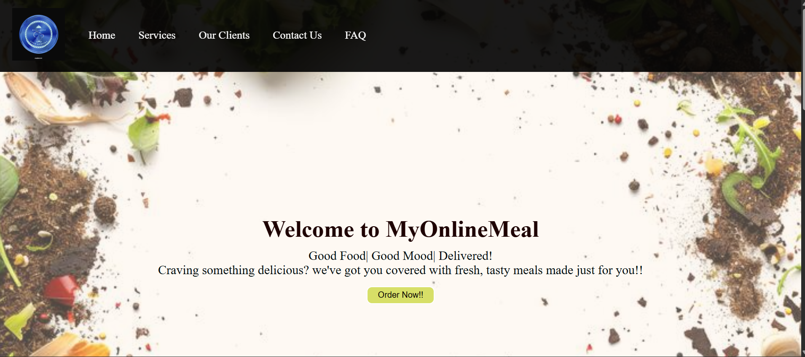
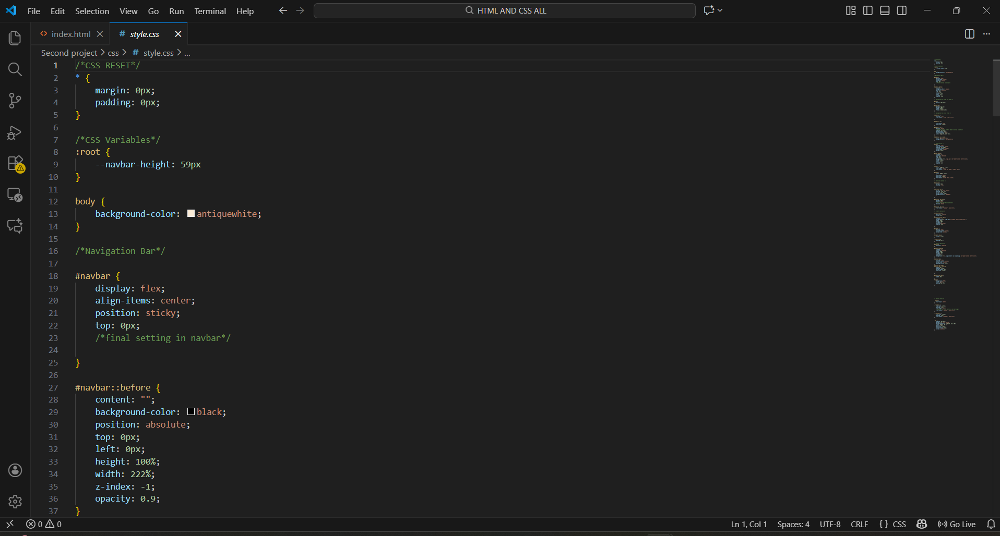
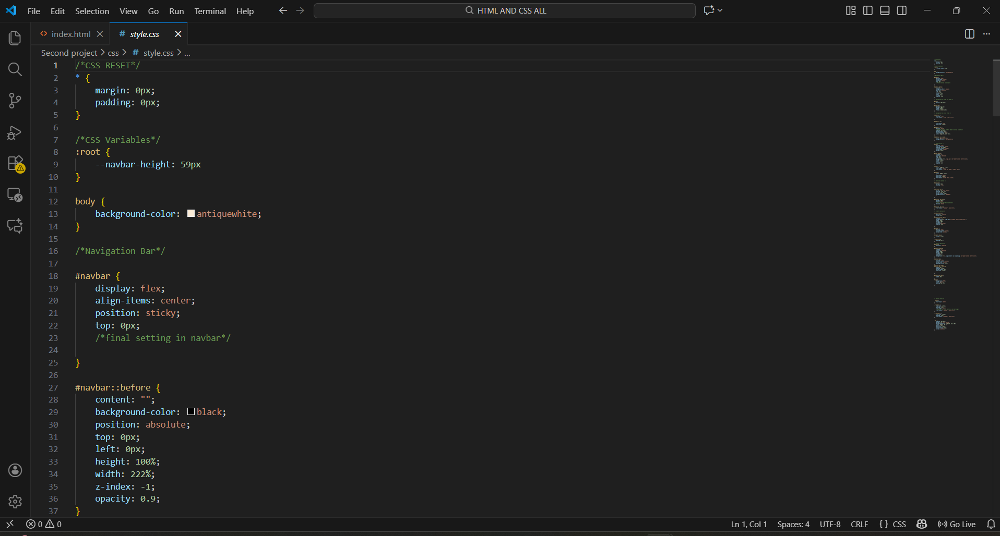
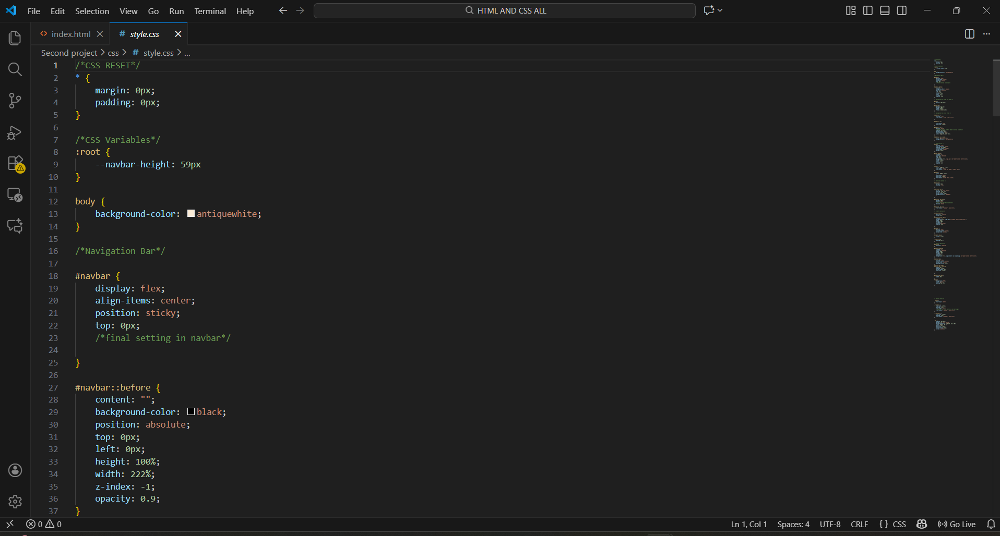

Projects
Deep Fake Content Creation
I worked on a mini project at NIELIT Guwahati as a part of my Winter Academic Internship in December 2024, focusing on deepfake content creation. This project helped me explore artificial intelligence, image processing, tensor flows and the ethical aspect of multimedia manipulation.


Food Delivery Page
I have also created a simple food delivery page as a part of my beginner learning in HTML and CSS. This project helped me practice basic layout design, styling and building a user-friendly interface.

 

